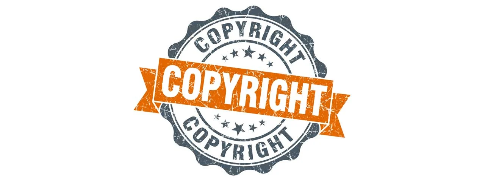
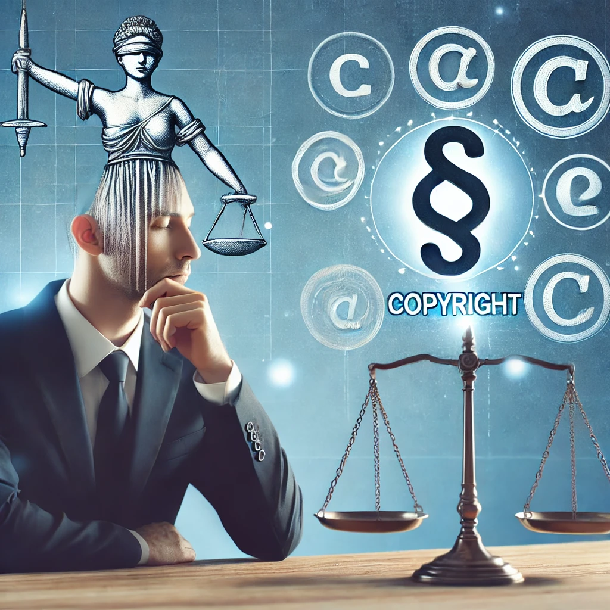
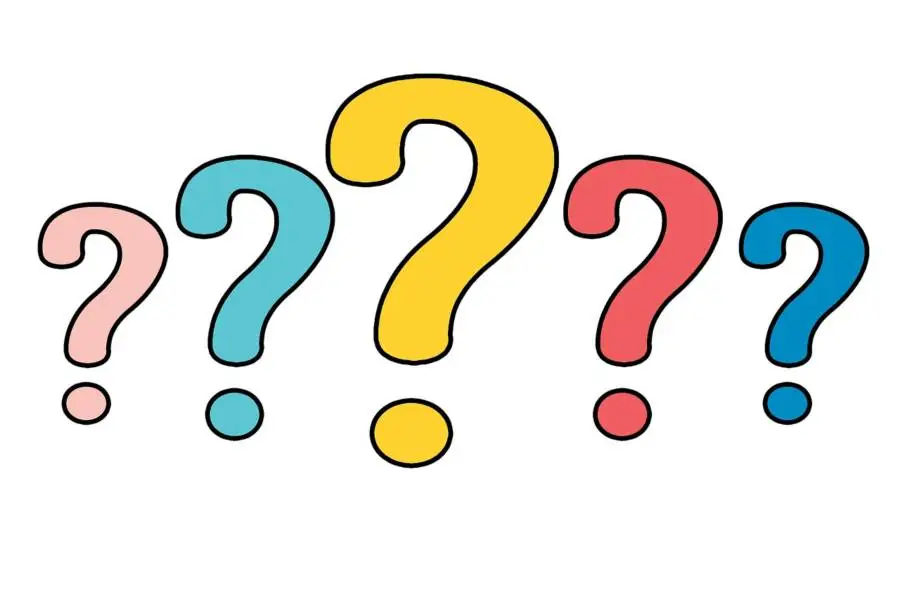

Exploring the ethical and scientific implications of reusing intellectual property in a startup.

Introduction
A computer startup company risks violating copyright laws by reusing another company's intellectual property code. In this case study, we explore the ethical and legal implications of such actions, focusing on key terms like Plagiarism, Ethics, and Reworking.

Central Questions
How does plagiarism affect the credibility of Ralph's work under SDX?
Is it acceptable for Ralph to reuse work done for a prior employer, given its status as intellectual property?
Is it fair to make workers redo tasks in a new way just to avoid copyright infringement?

Ethical Components
Ethically, reusing intellectual property raises questions of fairness, ownership, and integrity. Employees may face dilemmas if they're asked to redo tasks, while companies must weigh the ethics of protecting intellectual property versus stifling innovation.
Scientific Components
From a technical standpoint, tracking and ensuring originality in code can be challenging, with advanced detection algorithms used to enforce copyright. Legally, infringement can result in serious consequences for startups relying on innovation.
References
Our analysis draws on course readings and peer-reviewed articles, which provide insight into the intersection of technology, ethics, and intellectual property rights.